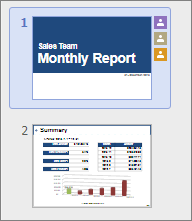

라이브러리에 문서를 저장하면 한컴오피스 Web을 사용하여 웹 브라우저에서 문서를 열고 공동 작업을 수행할 수 있습니다.
참여자가 변경한 내용은 실시간으로 반영되며 다른 사람이 문서를 수정하는 동안 기다리지 않아도 됩니다. 하나의 문서를 여러 명의 참여자가 확인하고 업데이트하여 공동 작업의 결과물을 만들어낼 수 있습니다.
다른 사람이 편집 중인 문단이나 단어에 사용자 색상의 커서가 표시되며, 이곳에 마우스 포인터를 올려 놓으면 사용자 이름이 표시됩니다.
다른 사람이 편집 중인 셀에 사용자 색상의 테두리가 표시되며, 이곳에 마우스 포인터를 올려 놓으면 사용자 이름이 표시됩니다.
여러 사용자가 동시에 하나의 슬라이드를 편집하면 슬라이드 썸네일 영역 사용자 아이콘이 표시되며, 이곳에 마우스 포인터를 올려 놓으면 사용자 이름이 표시됩니다.

다른 사람이 편집 중인 글상자에 사용자 색상의 테두리가 표시되며, 이곳에 마우스 포인터를 올려 놓으면 사용자 이름이 표시됩니다.
다른 사람이 편집 중인 부분에 사용자 색상의 커서가 표시되며, 현재 편집자가 편집을 완료할 때까지 다른 편집자가 내용을 변경할 수 없도록 해당 문단이나 문장이 잠깁니다. 보기-작업 창을 누르면 현재 협업에 참여 중인 공통 편집자를 확인할 수 있습니다.
협업에 참여 중인 여러 사람이 동시에 입력 취소를 시도하면 되돌리기 메뉴가 비활성화될 수 있습니다. 협업하는 동안에는 셀 병합 메뉴를 사용할 수 없습니다.
문자 단위가 아닌 셀 단위의 협업을 지원합니다. 공동 편집자 중 한 명이 스프레드시트를 삭제하면 다른 편집자에게 알림 메시지가 표시되며 편집이 제한됩니다.
다른 사람이 편집 중인 글상자에 사용자 이름과 테두리만 표시되며, 글상자 안에서의 편집 위치는 커서로 표시되지 않습니다. 협업에 참여 중인 여러 사람이 동시에 입력 취소를 시도하면 되돌리기 메뉴가 비활성화될 수도 있습니다.
다른 사람이 편집 중인 문장이나 셀(표 안의 특정 셀)에 잠금 아이콘이 표시되며 공동 편집자의 편집이 제한됩니다. 베타 기간에는 협업 기능이 불안정할 수 있으며 빠른 기간 안에 패치를 통해 개선될 예정입니다.